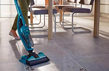

Вертикальные пылесосы переживают свое второе рождение, заново набирая популярность. Это компактная техника, которая позволяет быстро убрать грязь в доме, не занимает много места и отличается бюджетной стоимостью.
Чтобы выгодно купить вертикальный пылесос, надо знать, на какие параметры обращать внимание и соотносить цену с качеством. Расскажем о критериях выбора такой техники для дома.
Пылесборник
Пылесборник — пластиковый контейнер, в который собирается вся грязь, которую убирает техника.
Это параметр, который не влияет на цену устройства, но определяет возможный объем уборки. Если пылесборник слишком маленький, придется останавливать уборку для его очистки, так как если он будет переполнен, пыль застрянет в воздушных каналах и уменьшит мощность всасывания. Если для обычных пылесосов это принципиально, то для вертикальных — это существенная проблема из-за зауженных каналов и негибкого корпуса.
Итак, вот как размер пылесборника влияет на объем уборки:
- меньше 0,2 литра — пылесос подходит для разовой уборки помещения размером не больше 10 кв.м.;
- от 0,2 до 0,4 литров — также возможна разовая уборка, но максимальный размер помещения увеличивается до 35 кв.м.;
- от 0,4 до 0,6 — объема хватит на 2-3 уборки помещений, общая площадь охвата — до 40 кв.м.;
- 0,6-0,8 — можно убрать квартиру, площадью не больше 60 кв.м.;
Пылесборник обычно прозрачный, можно визуально контролировать его наполнение, но некоторые модели оснащены специальным индикатором, по которому можно понять, что пора чистить контейнер.
Материалы по теме

Пылесборник — пластиковый контейнер, в который собирается вся грязь, которую убирает техника.
Это параметр, который не влияет на цену устройства, но определяет возможный объем уборки. Если пылесборник слишком маленький, придется останавливать уборку для его очистки, так как если он будет переполнен, пыль застрянет в воздушных каналах и уменьшит мощность всасывания. Если для обычных пылесосов это принципиально, то для вертикальных — это существенная проблема из-за зауженных каналов и негибкого корпуса.
Название текста : главное
- Существует несколько наиболее распространенных
- Существует несколько наиболее
- Существует несколько наиболее распространенных
Пылесборник — пластиковый контейнер, в который собирается вся грязь, которую убирает техника.
Это параметр, который не влияет на цену устройства, но определяет возможный объем уборки. Если пылесборник слишком маленький, придется останавливать уборку для его очистки, так как если он будет переполнен, пыль застрянет в воздушных каналах и уменьшит мощность всасывания. Если для обычных пылесосов это принципиально, то для вертикальных — это существенная проблема из-за зауженных каналов и негибкого корпуса.